Introduction
Situé à l’extrême ouest de l’Afrique, le Sénégal est un pays francophone reconnu pour sa stabilité politique, sa diversité culturelle, et ses ressources naturelles abondantes. Bordé par l'océan Atlantique, le Sénégal est souvent qualifié de porte de l'Afrique.
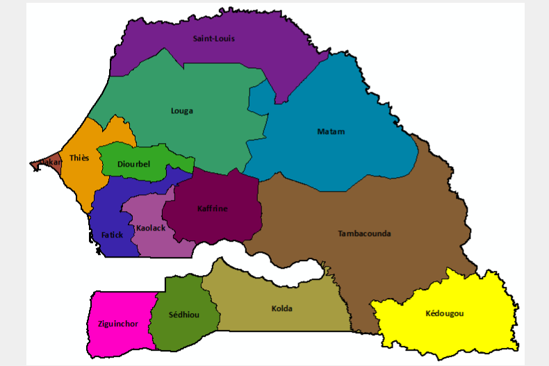Le président de la république

Bassirou Diomaye Faye, né le 25 mars 1980 à Ndiaganiao, est un homme d'État sénégalais, président de la république du Sénégal depuis le 2 avril 2024 . Bassirou Diomaye Faye en juin 2024. Inspecteur des finances publiques, Bassirou Diomaye Faye est candidat à l'élection présidentielle de 2024 sous l'étiquette du PASTEF.
Symbole national
L'emblème du Sénégal est le lion, symbole de courage et de force. Le drapeau est composé de trois bandes verticales verte, jaune et rouge avec une étoile verte à cinq branches au centre.
Faune et flore

Le Sénégal possède une biodiversité riche, avec des espèces animales telles que les lions, les antilopes, les hippopotames et une variété d'oiseaux migrateurs. Sa flore comprend des baobabs, des acacias et des mangroves, particulièrement dans la région de la Casamance.
Fleuves et paysages

Le Sénégal est traversé par plusieurs fleuves importants, dont le fleuve Sénégal, le fleuve Gambie et le fleuve Casamance. Le pays offre une variété de paysages, allant des savanes aux forêts tropicales, en passant par des zones désertiques au nord.
Atouts économiques
Le Sénégal dispose d’un secteur agricole riche (arachide, riz, horticulture), d’un potentiel halieutique énorme et d’un développement progressif de son industrie (agroalimentaire, cimenterie, chimie).

Le port de Dakar est un des plus grands hubs logistiques de la sous-région.
Richesse culturelle
Le pays est un carrefour culturel, connu pour la Teranga (hospitalité sénégalaise), ses traditions musicales (sabar, mbalax), et son patrimoine oral. Des figures mondiales comme Youssou N'Dour et Léopold Sédar Senghor sont originaires du Sénégal.
Tourisme et patrimoine
 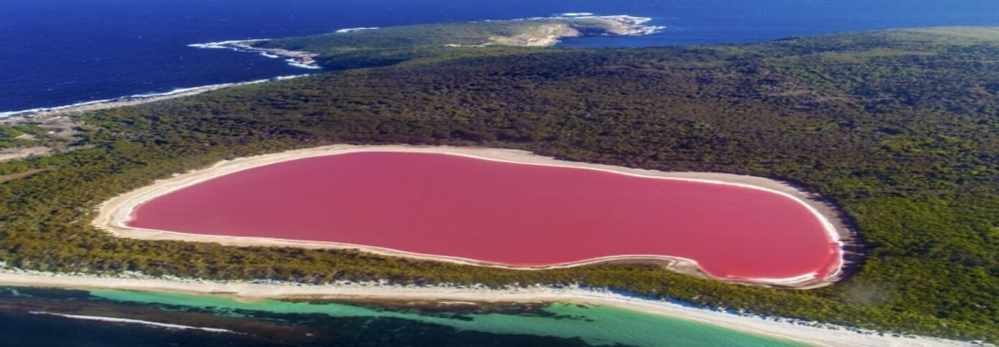
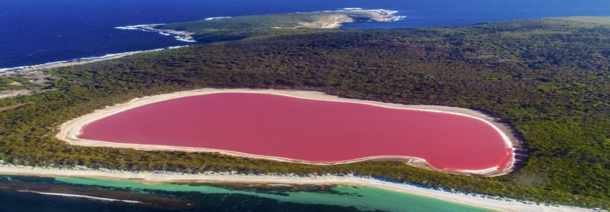
 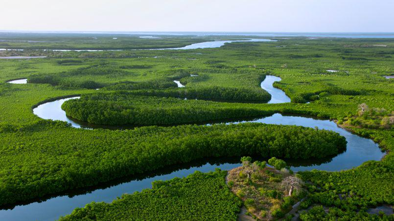
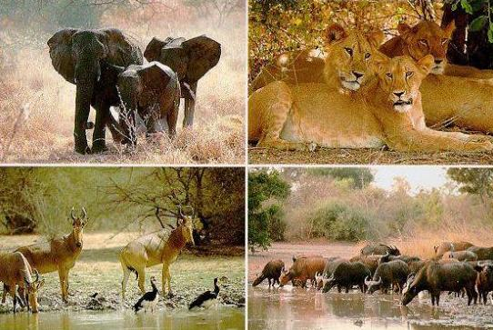
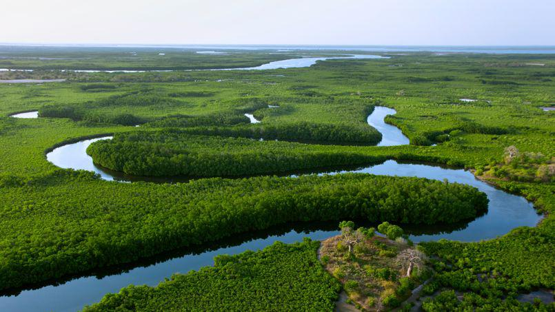
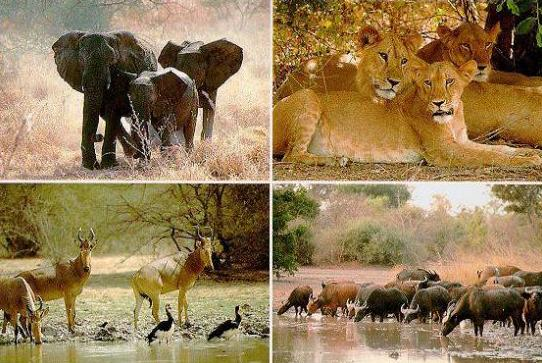
Le Sénégal attire les visiteurs par ses parcs nationaux (Niokolo-Koba, Langue de Barbarie), ses plages, l'île de Gorée, et le Lac Rose. Dakar, capitale dynamique, mêle modernité et tradition.
Avancées sociales et politiques

Réputé pour sa démocratie et la liberté de presse, le Sénégal est un exemple de stabilité en Afrique. Des efforts importants sont faits en matière d’éducation, de santé, et d’infrastructures publiques.


 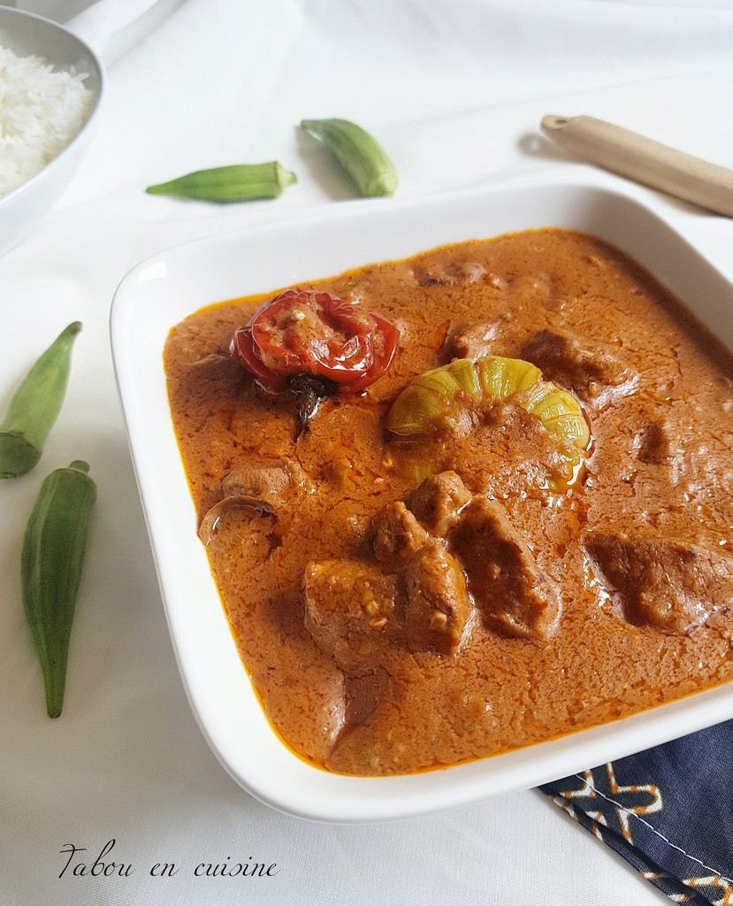
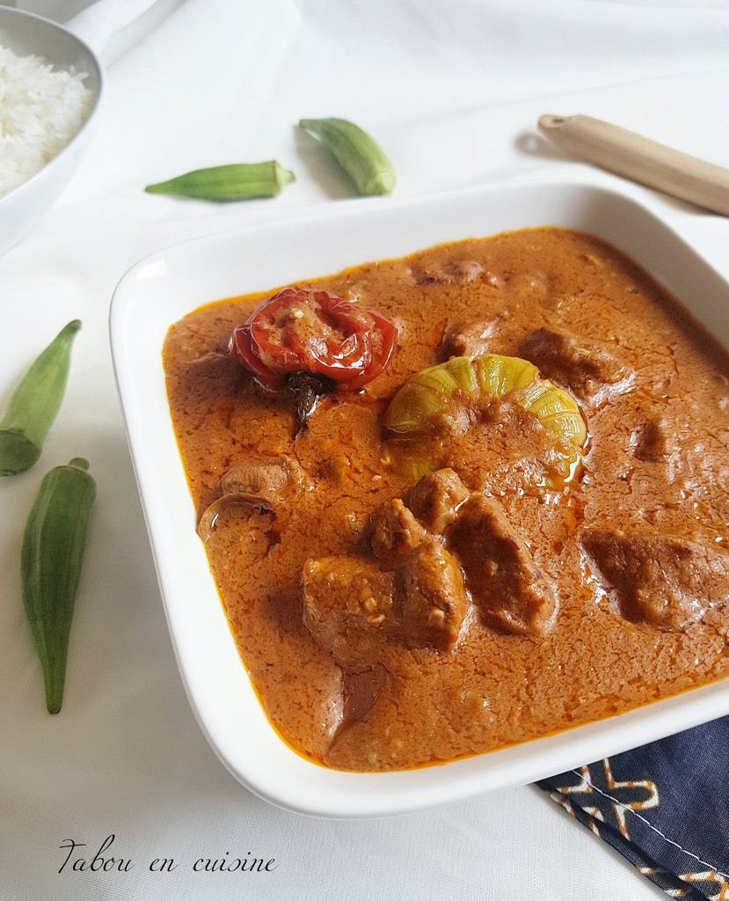
 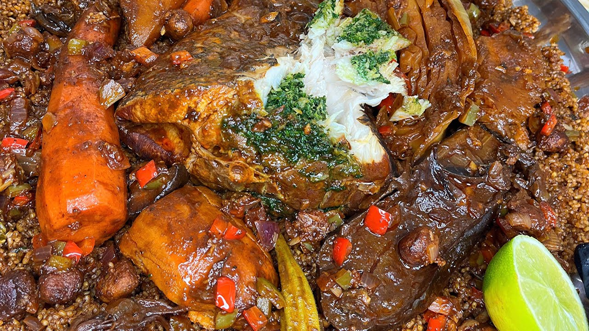
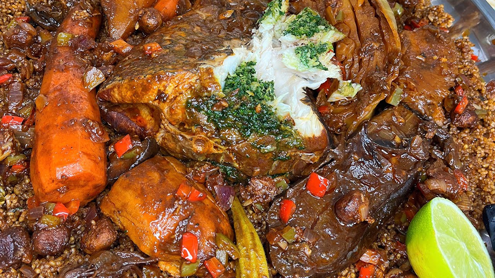